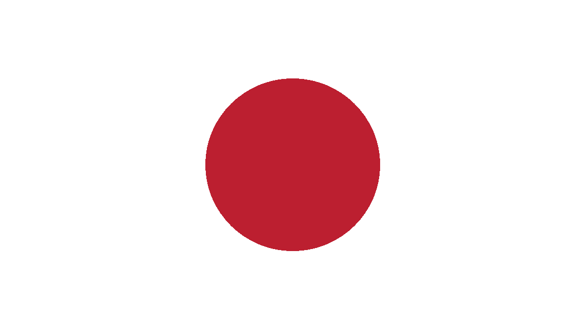

Introdução
O Japão, país insular no Oceano Pacífico, tem cidades densas, palácios imperiais, parques nacionais montanhosos e milhares de santuários e templos. Os trens-bala Shinkansen conectam as principais ilhas: Kyushu (com as praias subtropicais de Okinawa), Honshu (onde ficam Tóquio e a sede do memorial da bomba atômica de Hiroshima) e Hokkaido (famosa como destino para a prática de esqui). Tóquio, a capital, é conhecida por seus arranha-céus e lojas e pela cultura pop.